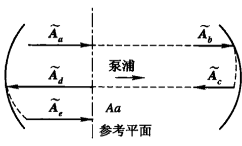

光参量放大在原理上同微波参量放大极为相似.
光参量放大实质上是一个差频产生的三波混频过程.
根据Manley-Rowe关系，在差频过程中，每湮灭一个最高频率的光子，同时要产生两个低频光子，在此过程中，这两个低频光波获得增益.
将一个强的高频光（泵浦光）与一个弱的低频光（信号光）同时射入非线性晶体，就可以产生差频光（空闲光、闲置光），而弱的信号光会被放大.
在光学参量振荡器中建立起来的两种频率的光波，任何一个光波都额可以称为“信号光”或“空闲光”，区别哪个是信号光，哪个是空闲光是没有意义的，名词的区别仅在于表明它们是两种不同的频率（或波长）.
光学参量振荡器的谐振腔可以同时对信号频率和空闲频率共振，也可以对其中一个频率共振，前者称为双共振光学参量振荡器（DRO），后者称为单共振光学参量振荡器（SRO）.
光学参量振荡器与激光振荡器都是很好的相干光光源，但它们的物理机制不同：
在激光放大器和激光振荡器中，增益来源于原子或分子能级之间的粒子数反转，其本质是受激辐射放大；
在光学参量放大器和光学参量振荡器中，增益来源于非线性介质中光波之间的耦合，其本质是非线性频率转换.
根据上述光学参量放大原理可知，描述参量放大特性的基本方程为三波混频基本耦合波方程.
一般情况下，该方程中的任一光电场振幅\(E(\omega_1,z)\)、\(E(\omega_2,z)\)与\(E(\omega_3,z)\)都不能认为是不变的，即使泵浦光\(E(\omega_3, z)\)原则上也可以减少为0，而同时信号光\(E(\omega_1)\)与空闲光\(E(\omega_2)\)得到不断增大.
但是，如果在所讨论的范围内，虽然信号光与空闲光已发生了显著的变化，但泵浦光还未显著地减小，则此时仍可将泵浦光\(E(\omega_3)\)看作常数.
利用这种近似，就只需求解三波混频基本耦合波方程中的\(\omega_1\)与\(\omega_2\)式.
根据光子通量表达式：
$$N_\omega = \frac{S_\omega}{\hbar\omega} = 2\sqrt{\frac{\epsilon_0}{\mu_0}}\frac{n|E(\omega)|^2}{\hbar\omega}$$利用下述关系引入\(A_\omega\)：
$$E(\omega) = \frac{1}{2}\sqrt{\frac{\omega}{n}}A_\omega$$若求出\(A_\omega\)，给出\(|A_\omega|^2\)，就可以直接得到光子通量（只相差一个常数）.
\(A_\omega\)是z的函数吗？
据此，对三波混频基本耦合波方程进行变量代换，得：
[令]
$$\sqrt{\frac{\omega_1\omega_2}{n_1n_2}}\sqrt{\mu_0\epsilon_0}\chi_{\text{eff}}^{(2)}E_3 = \Gamma_0$$故：
$$\frac{\mathrm{d}A_1}{\mathrm{d}z} = i\Gamma_0A_2^*e^{-i\Delta kz}$$ $$\frac{\mathrm{d}A_2^*}{\mathrm{d}z} = i\Gamma_0A_1e^{i\Delta kz}$$因此，\(A_1\)与\(A_2^*\)满足如下微分方程：
$$\frac{\mathrm{d}^2A_1}{\mathrm{d}z^2} + i\Delta k\frac{\mathrm{d}A_1}{\mathrm{d}z} - \Gamma_0^2A_1 = 0$$ $$\frac{\mathrm{d}^2A_2^*}{\mathrm{d}z^2} - i\Delta k\frac{\mathrm{d}A_2^*}{\mathrm{d}z} - \Gamma_0^2A_2^* = 0$$边界条件为：
$$\left.A_1(z)\right\rvert_{z = 0} = A_1(0)$$ $$\left.A_2^*(z)\right\rvert_{z = 0} = A_2^*(0)$$ $$\left.\frac{\mathrm{d}A_1}{\mathrm{d}z}\right\rvert_{z = 0} = i\Gamma_0A_2^*(0)$$求解微分方程，得：
亦即频率为\(\omega_3\)的泵浦光同时放大频率为\(\omega_1\)和\(\omega_2\)的信号光和空闲光随\(z\)变化的一般规律.
$$A_1e^{i\frac{\Delta kz}{2}} = A_1(0)\left[\cosh(\Gamma z) - i\frac{\Delta k}{2\Gamma}\sinh(\Gamma z)\right] + i\frac{\Gamma_0}{\Gamma}A_2^*(0)\sinh(\Gamma z)$$ $$A_2^*e^{-i\frac{\Delta kz}{2}} = A_2^*(0)\left[\cosh(\Gamma z) - i\frac{\Delta k}{2\Gamma}\sinh(\Gamma z)\right] - i\frac{\Gamma_0}{\Gamma}A_1(0)\sinh(\Gamma z)$$具体求解过程.
\(A_2(0) = 0\)时，可以得到频率为\(\omega_1\)的信号光的功率增益\(G(z)\)为：
与激光器不同的是：参量振荡器的增益是单向的，当\(\omega_1\)和\(\omega_2\)光波镜腔镜反射回来通过晶体时，增益得不到增强，反而要受到损失.
下面从信号光与空闲光随其通过非线性晶体距离\(z\)的变化规律出发，根据光波振荡自洽条件，导出参量振荡器的振荡条件.
分析参量振荡的基本模型如图所示：

简单起见，设非线性晶体本身作为一个光学谐振腔，其两端对信号光与空闲光的反射率\(R_{1,2} = |r_{1,2}|^2\)，\(r\)为反射系数.
腔镜对泵浦光是透明的.
[设]在腔中任一平面\(z\)处的信号光可用下面的“矢量”描述：
$$\widetilde{\boldsymbol{A}}(z) = \left[\begin{matrix}A_1(z)e^{ik_1z}\\A_2^*(z)e^{-ik_2z}\end{matrix}\right]$$\(\boldsymbol{A}\)上的\(\sim\)表示此矢量是人为假设的.
在非线性晶体内通过腔长\(l\)时的\(\widetilde{\boldsymbol{A}}(l)\)为：
$$\begin{align} \widetilde{\boldsymbol{A}}(l) &= \left[\begin{matrix}A_1(l)e^{ik_1z}\\A_2^*(l)e^{-ik_2z}\end{matrix}\right]\\ &= \left[\begin{matrix}e^{i\left(k_1 - \frac{\Delta k}{2}\right)l}\left[\cosh(\Gamma l) + i\frac{\Delta k}{2\Gamma}\sinh(\Gamma l)\right] & ie^{i\left(k_1 - \frac{\Delta k}{2}\right)l}\frac{\Gamma_0}{\Gamma}\sinh(\Gamma l)\\-ie^{-i\left(k_2 - \frac{\Delta k}{2}\right)l}\frac{\Gamma_0}{\Gamma}\sinh(\Gamma l)&e^{-i\left(k_2 - \frac{\Delta k}{2}\right)l}\left[\cosh(\Gamma l) - i\frac{\Delta k}{2\Gamma}\sinh(\Gamma l)\right]\end{matrix}\right]\left[\begin{matrix}A_1(0)\\A_2^*(0)\end{matrix}\right] \end{align}$$若\(\widetilde{\boldsymbol{A}}(z)\)在谐振腔内往返一周保持不变，就表示信号光与空闲光处于稳定的振荡状态，由此可推导出参量振荡器的振荡条件.
[设]基本模型中腔镜左端的场矢量为\(\widetilde{\boldsymbol{A}}_a\)，经过如下四个矩阵变换
由矢量\(\widetilde{\boldsymbol{A}}_a\)变换为矢量\(\widetilde{\boldsymbol{A}}_e\).
[设]振荡器是在相位匹配条件（\(\Delta k = 0\)）条件下运行的，有：
$$\widetilde{\boldsymbol{A}}_e = \left[\begin{matrix}r_1&0\\0&r_2^*\end{matrix}\right]\left[\begin{matrix}e^{ik_1l}&0\\0&e^{-ik_2l}\end{matrix}\right]\left[\begin{matrix}r_1&0\\0&r_2^*\end{matrix}\right]\left[\begin{matrix}e^{ik_1l}\cosh(\Gamma_0l)&ie^{ik_1l}\sinh(\Gamma_0l)\\-ie^{-ik_2l}\sinh(\Gamma_0l)&e^{-ik_2l}\cosh(\Gamma_0l)\end{matrix}\right]\widetilde{\boldsymbol{A}}_a$$[令]
$$\boldsymbol{M} = \left[\begin{matrix}r_1^2\cosh(\Gamma_0l)e^{i2k_1l}&ir_1^2\sinh(\Gamma_0l)e^{i2k_1l}\\-i(r_2^*)^2\sinh(\Gamma_0l)e^{-i2k_2l}&(r_2^*)^2\cosh(\Gamma_0l)e^{-i2k_2l}\end{matrix}\right]$$则上式可简写为：
$$\widetilde{\boldsymbol{A}}_e = \boldsymbol{M}\widetilde{\boldsymbol{A}}_a$$自洽条件为：
$$\widetilde{\boldsymbol{A}}_e = \widetilde{\boldsymbol{A}}_a$$ $$\boldsymbol{M}\widetilde{\boldsymbol{A}}_a = \widetilde{\boldsymbol{A}}_a$$ $$(\boldsymbol{M} - \boldsymbol{I})\widetilde{\boldsymbol{A}}_a$$上式具有非零解的条件为：
$$\det(\boldsymbol{M} - \boldsymbol{I}) = 0$$因而有：
下面用参量振荡条件式导出两类重要的参量振荡器的阈值条件.
双共振参量振荡器的阈值条件对频率为\(\omega_1\)的信号光与频率为\(\omega_2\)的空闲光都有高品质因素值的振荡器.
双共振情况下的参量振荡条件为：
$$[R_1\cosh(\Gamma_0l) - 1][R_2\cosh(\Gamma_0l) - 1] = R_1R_2\sinh^2(\Gamma_0l)$$若腔镜的反射率\(R_1, R_2\approx 1\)，且\(\cosh(\Gamma_0l)\approx 1 + \frac{1}{2}\Gamma_0^2l^2\)，由上式可得：
$$(\Gamma_0)_{th}l = \sqrt{(1-R_1)(1-R_2)}$$利用泵浦强度表示式：
$$S_{\omega_3} = 2\sqrt{\frac{\varepsilon_0}{\mu_0}}n_3|E(\omega_3)|^2$$可以得到双共振参量振荡器的阈值泵浦强度为：
$$(S_{\omega_3})_{th} = $$只有一个频率的光波（如频率为\(\omega_1\)的信号光）在腔镜处被反射返回形成振荡，而另一个频率的光波（空闲光\(\omega_2\)）只能在一个方向上传播的振荡器.
光参量振荡器的最大特点是：其输出频率可以在一定频率范围内连续改变，不同的非线性介质和不同的泵浦源，可以得到不同的调谐范围.
当泵浦光频率\(\omega_2\)固定时，参量振荡器的振荡频率应同时满足频率与相位匹配条件：
$$\omega_3 = \omega_1 + \omega_2$$ $$\boldsymbol{k}_3 = \boldsymbol{k}_1 + \boldsymbol{k}_2$$若三波波矢共线，则有：
$$n_3\omega_3 = n_1\omega_1 + n_2\omega_2$$由上式可见：信号光与空闲光的频率依赖于泵浦光的折射率，因而可以通过改变泵浦光的折射率使\(\omega_1\)和\(\omega_2\)频率作相应的变化，以满足相位匹配条件.
要改变\(n_3\)，可以通过改变泵浦光与非线性晶体间的夹角角度调谐，或改变晶体的温度温度调谐来实现.